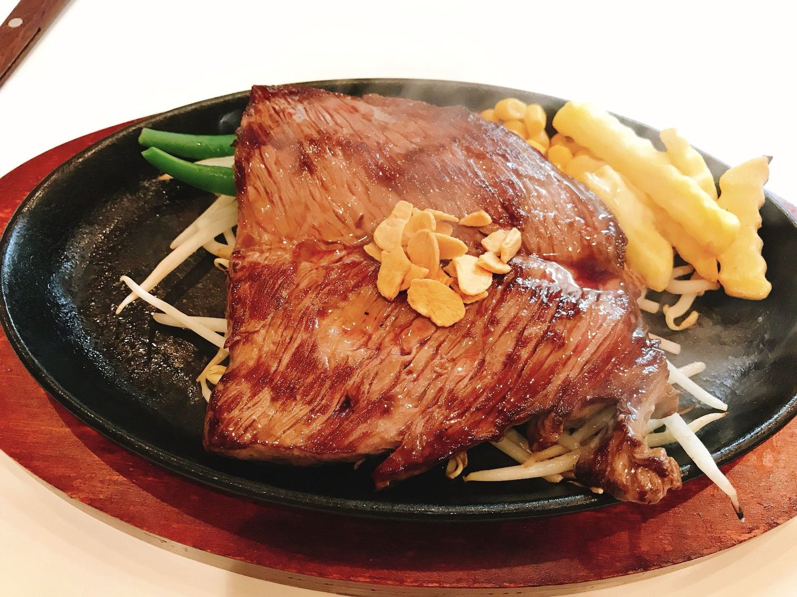
KOGA — HIGASHIHONCHO
焼き加減をお申し付けいただける、JR古河駅 東口から歩いて2分のステーキ食堂です。
赤身の富士ステーキは 160g 1,990円 から、グラム数もお選びいただけます。
How would you like it
お肉は一枚ずつ、ご注文をいただいてから鉄板で焼いております。レアからウェルダンまで、お好みをそのままお伝えください。迷われたときは、赤身の甘みがいちばん立つミディアムレアをおすすめしております。
グラム数も160gから400gまでお選びいただけます。少なめ・多めのご相談も承ります。
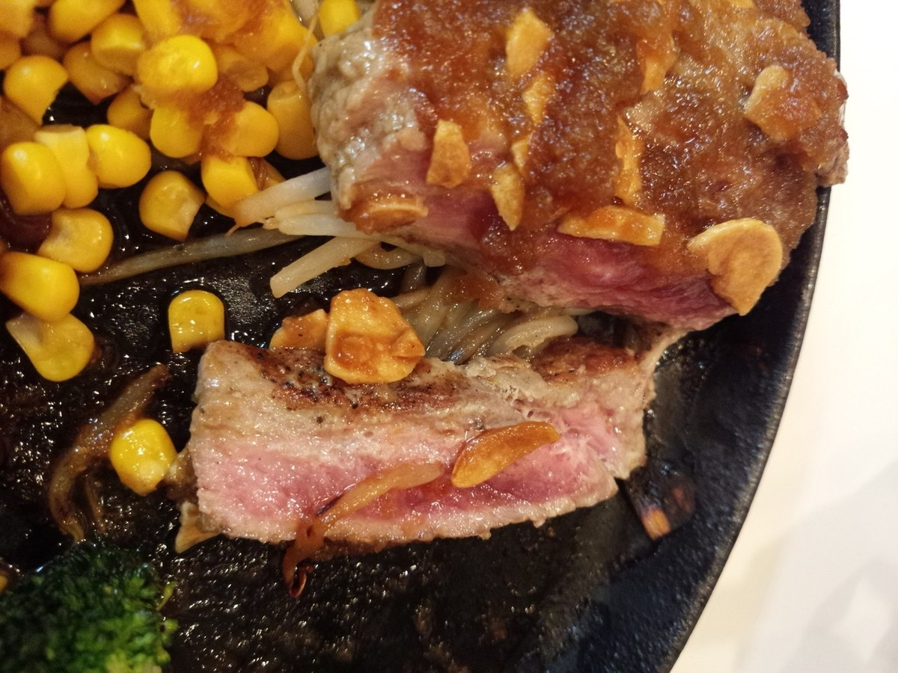
Signature
当店の名を付けた、赤身のステーキでございます。脂の重さが気になる方にも、最後のひと切れまで召し上がっていただけるよう選んでおります。
ソースは和風おろしと玉ねぎの二種からお選びください。熱した鉄板ごとお席へお運びしますので、エプロンをお使いいただけます。
お食事のセットは＋550円で承ります。
1,990円160g／2026年5月現在
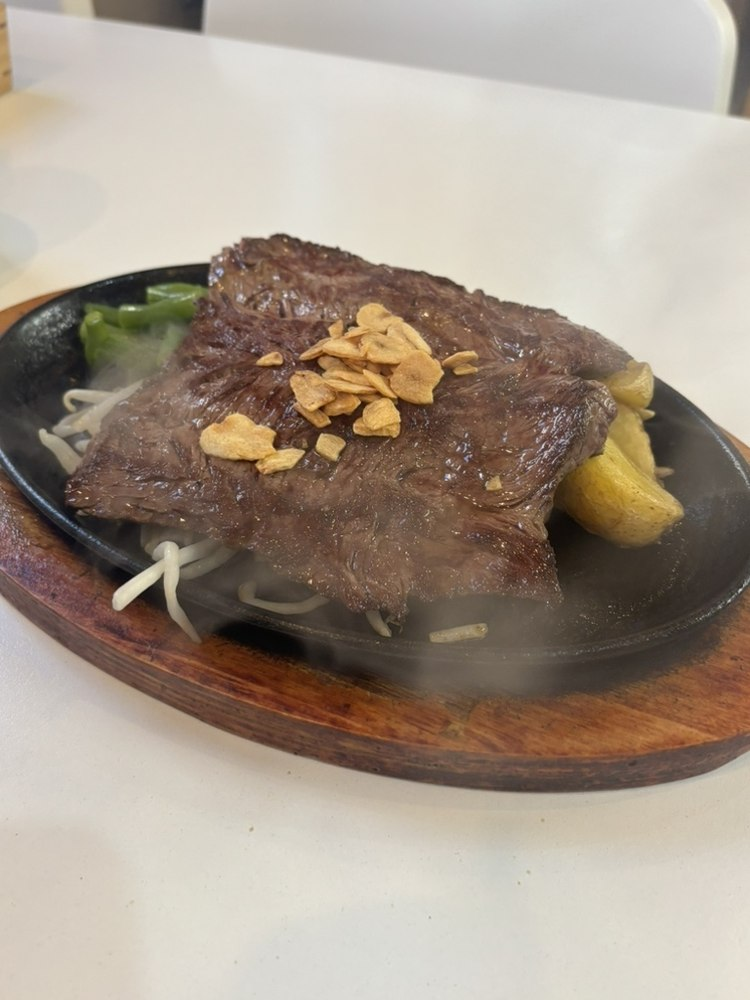
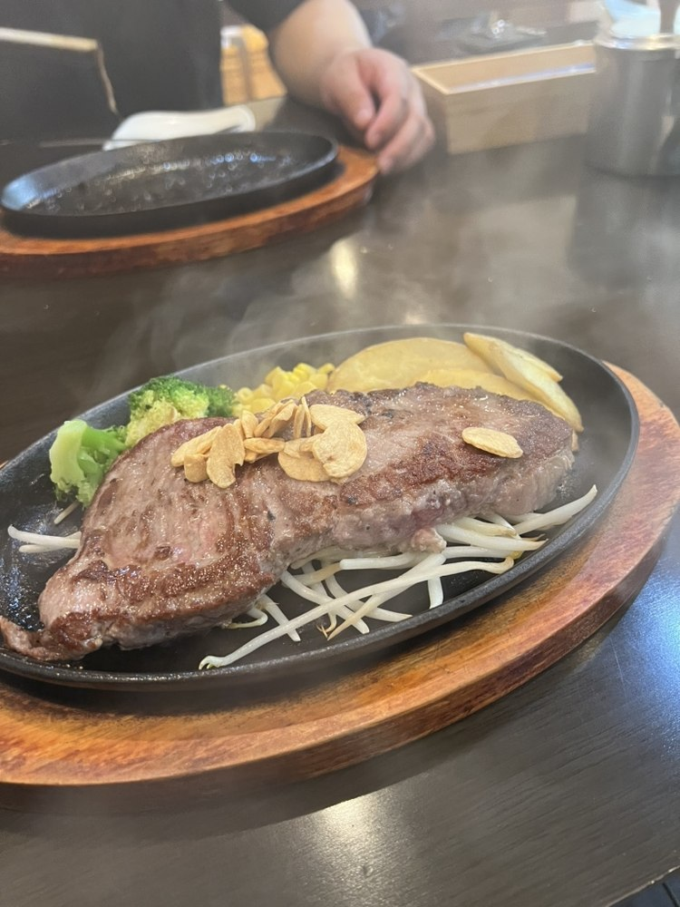
Lunch
お昼は11時30分から、ラストオーダーは14時でございます。平日と土曜のお昼は、ステーキ一枚にライスまたはパン・スープ・サラダと、食後のコーヒーをお付けしてお出ししております。日曜・祝日はお昼のセットをお休みしております。
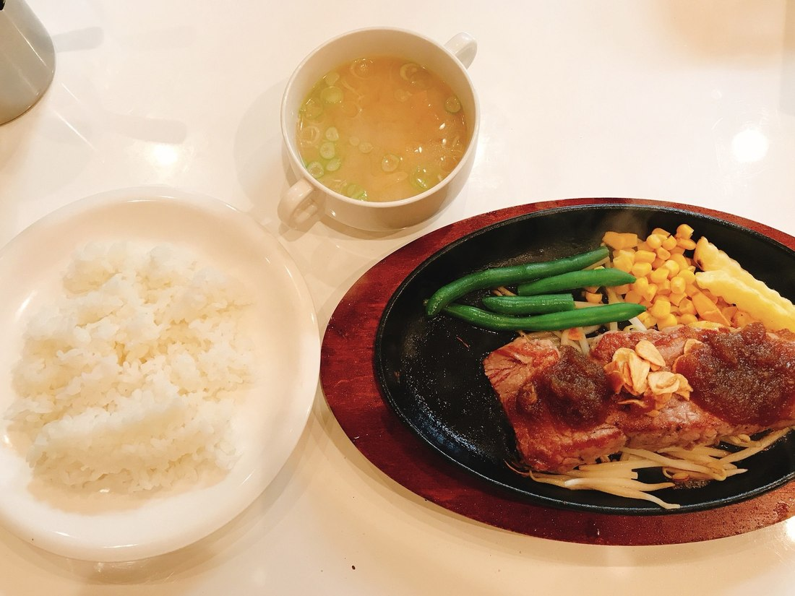
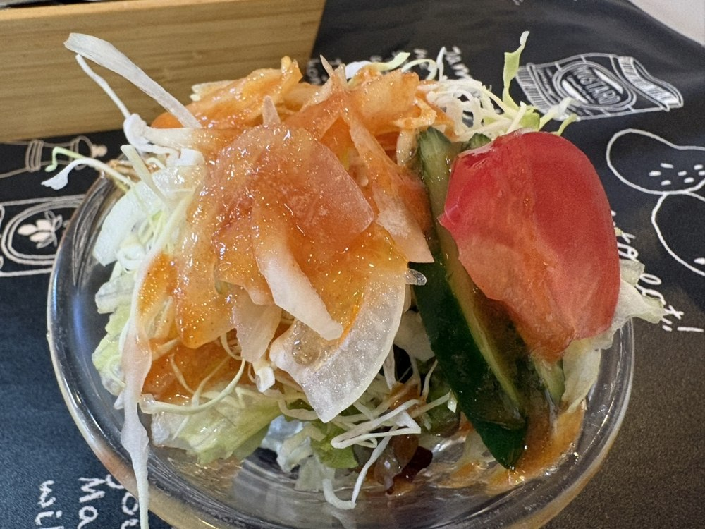
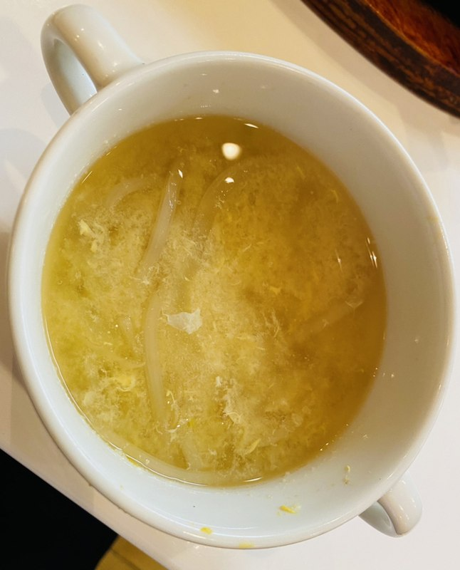
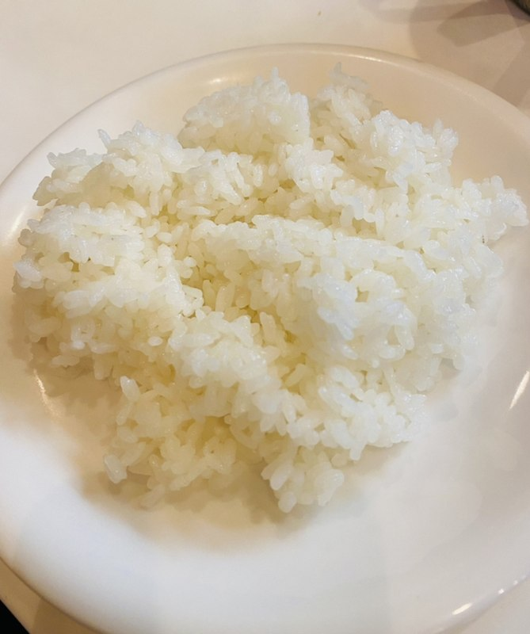
Our place
カウンター席とテーブル席、お座敷をご用意しております。お座敷は靴を脱いでお上がりください。お一人さまのお食事にも、ご家族そろってのお席にもお使いいただけます。
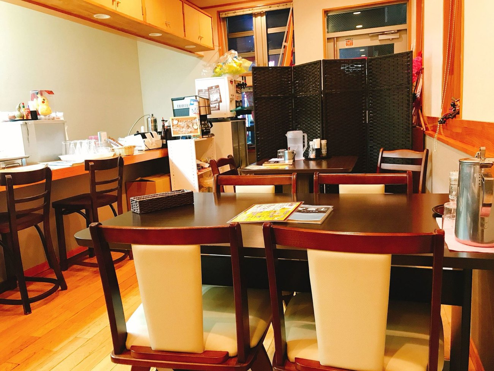
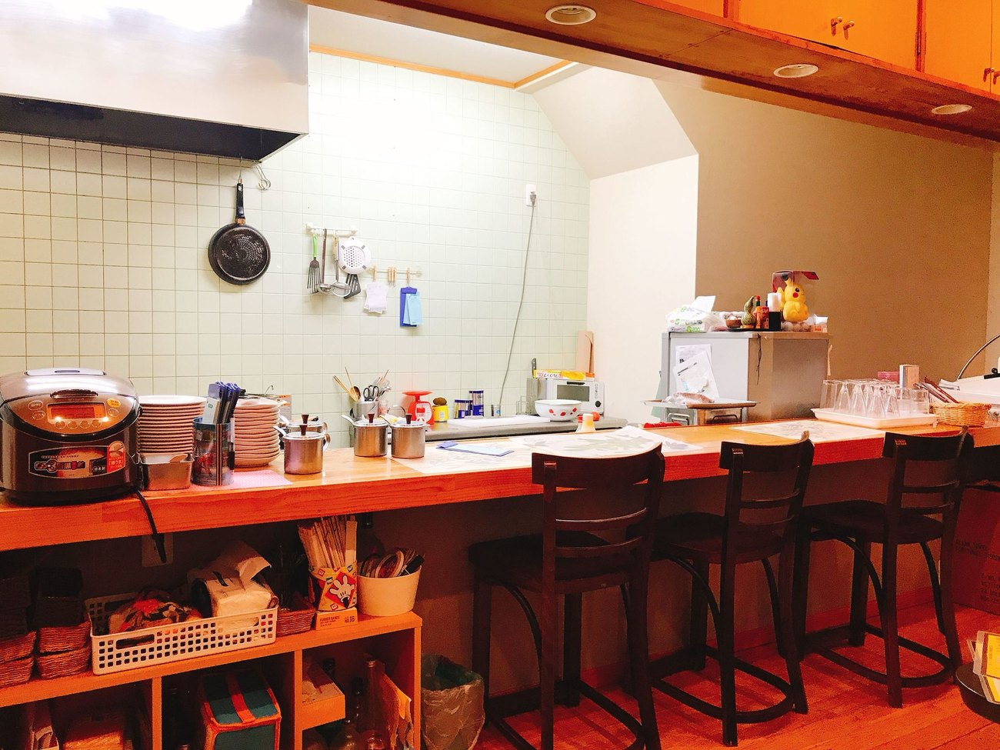
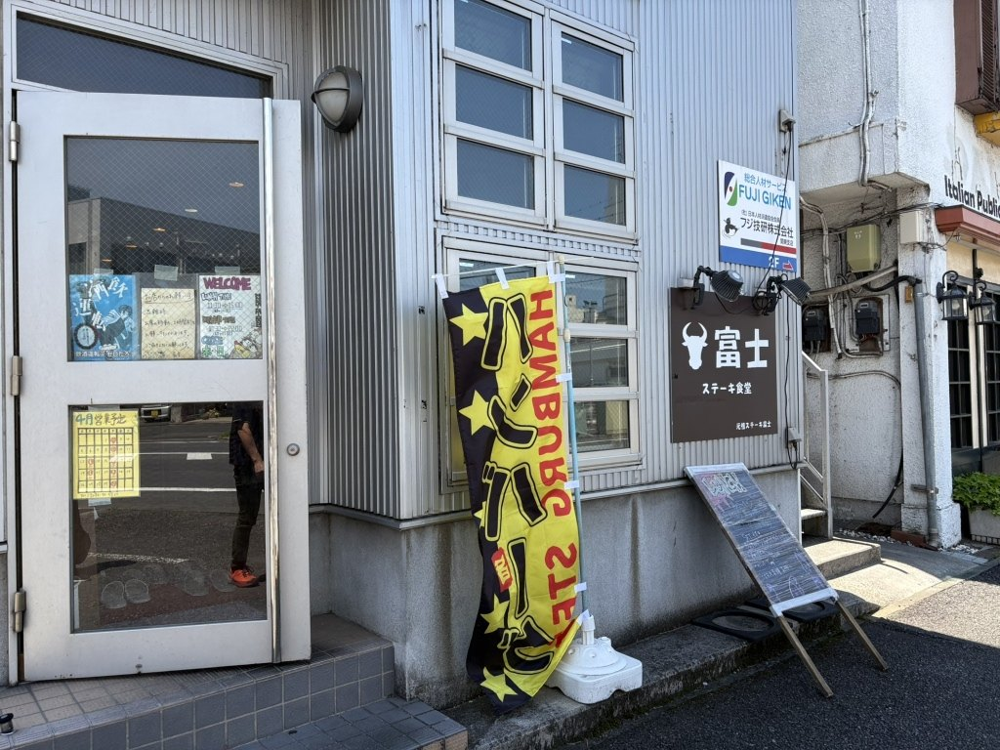
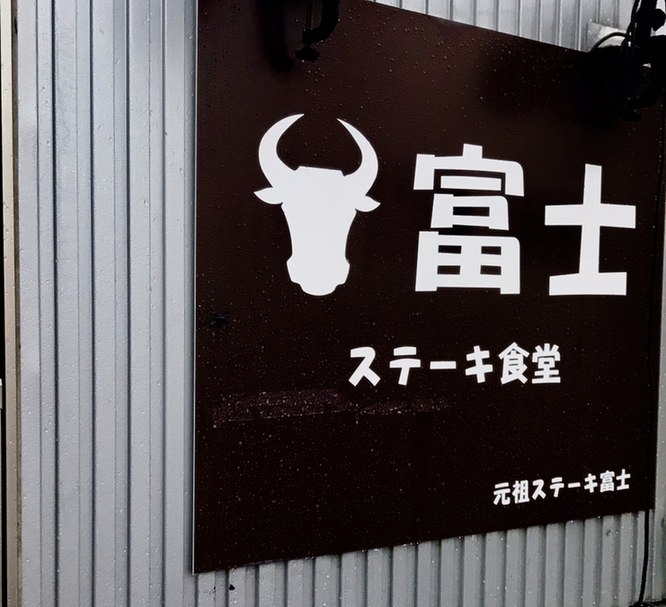
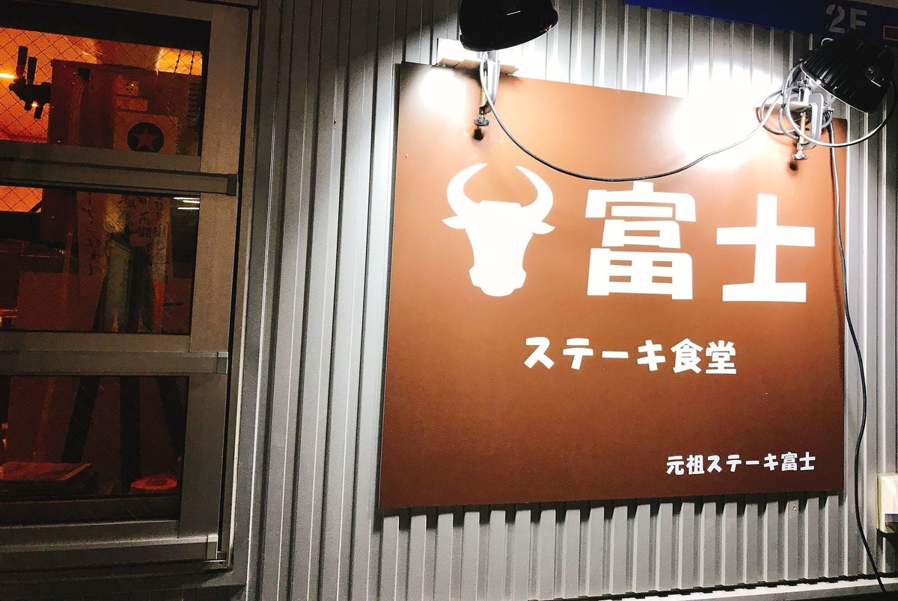
Access
| 店名 | ステーキ食堂 富士 |
|---|---|
| 住所 | 〒306-0013 茨城県古河市東本町1-3-3 JR古河駅 東口から歩いて2分 |
| 電話 | 0280-32-5822 |
| 営業時間 | 昼 11:30〜14:00（L.O.） 夜 17:30〜22:00（L.O. 21:00） |
| 定休日 | 木曜日 |
| お席 | カウンター席・テーブル席・お座敷 お座敷は靴を脱いでお上がりください。個室はございません |
| 駐車場 | ございます |
| お支払い | 現金のみ クレジットカード・電子マネー・QRコード決済はお取り扱いしておりません |
| ご予約 | お電話で承ります |